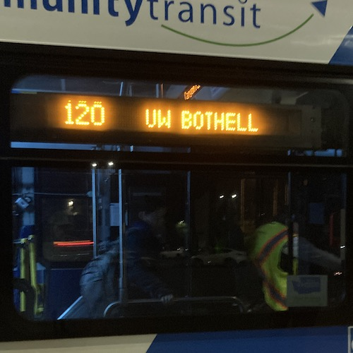

DART
204


DART
224


DART
630DART
631

DART
635

DART
773
DART
901
DART
903
DART
906DART
907
DART
914
DART
915
DART
917
DART
930


| A | Tukwila International Boulevard Station | Federal Way Transit Center | 1/11/24 19:46 | | |
| B | Redmond | Bellevue | 11/14/23 16:01 | | |
| C | South Lake Union | Westwood Village | 10/11/23 16:38 | | |
| D | Crown Hill | Downtown Seattle | 10/11/23 17:12 | ||
| E | Aurora Village Transit Center | Downtown Seattle | 10/2/23 16:27 | | |
| F | Burien Transit Center | The Landing | 1/4/24 20:25 | | |
| G | Madison Valley | Downtown Seattle | 9/14/24 14:12 | ||
| H | Burien | Downtown Seattle | 1/16/24 13:52 | | |
| 1 | Kinnear | Downtown Seattle | 10/2/23 16:07 | ||
| 2 | West Queen Anne | Madrona Park | 10/11/23 17:40 | | |
| 3 | Summit | Madrona | 10/16/23 16:29 | | |
| 4 | Seattle Pacific University | Judkins Park | 10/11/23 18:16 | | |
| 5 | Shoreline Community College | Downtown Seattle | 10/11/23 18:50 | ||
| 7 | Prentice St | Downtown Seattle | 10/2/23 16:08 | | |
| 8 | Seattle Center | Mount Baker | 10/11/23 16:54 | ||
| 9 | Rainier Beach | Broadway | 10/16/23 15:58 | | |
| 10 | Capitol Hill | Downtown Seattle | 10/2/23 16:57 | ||
| 11 | Madison Park | Downtown Seattle | 10/11/23 19:09 | ||
| 12 | Interlaken Park | Downtown Seattle | 10/16/23 16:16 | | |
| 13 | Seattle Pacific University | Downtown Seattle | 10/11/23 17:02 | ||
| 14 | Mount Baker | Downtown Seattle | 10/2/23 15:56 | | |
| 17 | Loyal Heights | Downtown Seattle | 10/11/23 17:58 | | |
| 20 | Discontinued | 9/28/23 15:47 | |||
| 21 | Arbor Heights | Downtown Seattle | 10/11/23 18:26 | | |
| 22 | Arbor Heights | Alaska Junction | 10/16/23 19:39 | | |
| 24 | Magnolia | Downtown Seattle | 10/2/23 16:40 | ||
| 27 | Colman Park | Downtown Seattle | 10/16/23 16:36 | | |
| 28 | Broadview | Downtown Seattle | 10/2/23 17:28 | | |
| 31 | Children's Hospital | Magnolia | 9/27/23 12:04 | | |
| 32 | Children's Hospital | Seattle Center | 9/28/23 13:40 | | |
| 33 | Discovery Park | Downtown Seattle | 10/11/23 17:18 | | |
| 36 | Othello Station | Downtown Seattle | 10/16/23 17:08 | ||
| 40 | Northgate | Downtown Seattle | 10/11/23 16:48 | | |
| 43 | University District | Downtown Seattle | 10/11/23 19:32 | | |
| 44 | Ballard | UW Station | 10/2/23 19:18 | | |
| 45 | Loyal Heights | Seattle Children's Hospital | 9/29/23 12:24 | ||
| 48 | University District | Mount Baker | 10/2/23 15:56 | | |
| 49 | University District | Downtown Seattle | 10/1/23 22:09 | | |
| 50 | Alki | Othello Station | 10/16/23 18:04 | | |
| 56 | Alki | Downtown Seattle | 10/16/23 18:57 | | |
| 57 | Alaska Junction | Downtown Seattle | 10/2/23 16:21 | | |
| 60 | Westwood Village | Broadway | 10/11/23 19:44 | | |
| 61 | Lake City | Greenwood | 9/14/24 12:45 | ||
| 62 | Sand Point | Downtown Seattle | 9/28/23 15:07 | | |
| 65 | Jackson Park | University District | 10/1/23 17:18 | ||
| 67 | Northgate | Children's Hospital | 9/29/23 13:09 | | |
| 70 | University District | Downtown Seattle | 10/2/23 19:12 | | |
| 73 | Discontinued | 10/12/23 14:08 | | ||
| 75 | Northgate | University District | 9/28/23 13:53 | | |
| 79 | Green Lake P&R | University District | 9/28/23 14:50 | | |
| 90 | Downtown Seattle | Capitol Hill | 2/6/25 8:37 | ||
| 96 | 12/3/24 15:07 | ||||
| 97 | Delisted | 1/13/24 11:10 | | ||
| 98 | 12/3/24 15:27 | ||||
| 101 | Renton | Downtown Seattle | 1/4/24 18:15 | | |
| 102 | Fairwood | Downtown Seattle | 11/8/23 16:49 | ||
| 105 | Renton Highlands | Renton | 1/4/24 17:59 | ||
| 106 | Renton | Chinatown/International District | 10/16/23 16:49 | | |
| 107 | Beacon Hill | Renton | 10/16/23 17:47 | | |
| 111 | Lake Kathleen | Downtown Seattle | 1/4/24 17:34 | | |
| 113 | Shorewood | Downtown Seattle | 1/11/24 17:02 | ||
| 118 | Vashon Island | Tahlequah | 1/30/24 16:04 | | |
| 119 | Vashon Island | Dockton | 1/30/24 15:23 | ||
| 124 | Tukwila International Blvd Station | Downtown Seattle | 10/11/23 17:43 | | |
| 125 | Westwood Village | Downtown Seattle | 11/8/23 16:25 | | |
| 128 | Southcenter | Admiral District | 10/16/23 19:21 | | |
| 131 | Burien | Downtown Seattle | 1/11/24 17:35 | | |
| 132 | Burien | Downtown Seattle | 1/16/24 16:30 | | |
| 148 | Fairwood | Renton | 1/4/24 20:18 | | |
| 150 | Kent | Downtown Seattle | 11/8/23 16:34 | | |
| 153 | Kent | Renton Transit Center | 1/4/24 19:30 | ||
| 156 | Highline College | Southcenter | 1/11/24 19:06 | | |
| 160 | Auburn | Renton | 1/4/24 18:36 | | |
| 161 | Kent | Burien | 1/16/24 17:02 | | |
| 162 | Lake Meridian | Downtown Seattle | 1/23/24 15:38 | ||
| 165 | Green River College | Burien | 1/11/24 18:28 | | |
| 168 | Maple Valley | Kent Station | 1/23/24 17:27 | | |
| 177 | Federal Way | Downtown Seattle | 2/1/24 15:19 | | |
| 181 | Twin Lakes P&R | Green River College | 1/23/24 18:45 | | |
| 182 | Northeast Tacoma | Federal Way Transit Center | 1/23/24 19:28 | | |
| 183 | Federal Way | Kent | 1/23/24 17:44 | | |
| 184 | SE Auburn | Auburn Station | 2/1/24 17:13 | ||
| 187 | Twin Lakes | Federal Way Transit Center | 1/23/24 20:03 | | |
| 193 | Federal Way | First Hill | 1/23/24 18:26 | | |
DART 204 | Mercer Island | Mercer Island | 12/14/23 17:26 | ||
| 208 | North Bend | Issaquah | 12/12/23 18:22 | | |
| 212 | Eastgate P&R | Downtown Seattle | 12/12/23 17:05 | ||
| 218 | Issaquah | Downtown Seattle | 12/12/23 17:26 | | |
| 221 | Education Hill | Eastgate P&R | 12/6/23 17:27 | | |
DART 224 | Redmond | Duvall | 12/6/23 19:21 | | |
| 225 | Kenmore | Overlake | 11/14/23 16:15 | | |
| 226 | Bellevue | Eastgate P&R | 12/6/23 16:50 | | |
| 230 | Kirkland | Bothell | 11/28/23 16:55 | | |
| 231 | Kirkland | Woodinville | 11/28/23 16:41 | ||
| 239 | Kirkland | Bothell | 11/28/23 17:16 | | |
| 240 | Bellevue | Renton | 12/12/23 16:09 | | |
| 241 | Bellevue | Eastgate | 12/12/23 15:21 | | |
| 245 | Kirkland | Factoria | 11/14/23 16:27 | | |
| 246 | Clyde Hill | Eastgate P&R | 12/12/23 14:54 | | |
| 249 | Overlake | Bellevue | 12/6/23 16:28 | | |
| 250 | Avondale | Bellevue | 11/14/23 16:10 | | |
| 255 | Totem Lake | University District | 10/2/23 15:15 | | |
| 257 | Kingsgate | Downtown Seattle | 11/28/23 16:18 | | |
| 269 | Issaquah | Overlake | 12/6/23 17:41 | | |
| 271 | Issaquah | University District | 11/14/23 17:10 | | |
| 302 | Discontinued | 11/8/23 17:17 | |||
| 303 | Aurora Village Transit Center | First Hill | 11/13/23 16:50 | | |
| 311 | Woodinville | Downtown Seattle | 11/14/23 15:20 | ||
| 322 | Kenmore | First Hill | 10/2/23 17:50 | ||
| 330 | Discontinued | 11/13/23 19:18 | | ||
| 331 | Kenmore | Shoreline | 11/13/23 18:15 | | |
| 333 | Mountlake Terrace Station | Shoreline South/148th St Station | 9/14/24 11:18 | | |
| 345 | Shoreline Community College | Northgate | 11/13/23 17:17 | | |
| 346 | Aurora Village | Shoreline South/148th | 11/13/23 17:05 | ||
| 347 | Discontinued | 11/13/23 17:33 | |||
| 348 | Richmond Beach | Northgate | 11/13/23 19:27 | ||
| 365 | Shoreline North/185th St Station | Northgate Station | 9/14/24 12:19 | | |
| 372 | Bothell | University District | 9/28/23 17:00 | | |
DART 630 | South Mercer Island | Downtown Seattle | 12/14/23 18:15 | ||
DART 631 | Burien Transit Center | Gregory Heights | 1/16/24 16:41 | | |
| 634 | 9/7/24 10:42 | | |||
DART 635 | Angle Lake Station | Des Moines Marina District | 1/16/24 18:40 | | |
| 636 | 9/15/24 10:43 | | |||
DART 773 | Alaska Junction | Seacrest Park | 1/16/24 14:41 | ||
| 775 | Seacrest Park | Alki | 1/16/24 14:47 | ||
| 893 | Forbes Creek | Rose Hill | 1/4/24 15:51 | | |
| 895 | Overlake | NW Lake Sammamish | 1/9/24 15:48 | ||
DART 901 | Federal Way | Mirror Lake | 1/23/24 20:15 | | |
DART 903 | Federal Way | Twin Lakes | 1/23/24 19:18 | | |
DART 906 | Fairwood | Tukwila Station | 1/4/24 19:10 | ||
DART 907 | Black Diamond | Renton | 1/19/24 9:52 | | |
DART 914 | Kent | East Hill | 1/23/24 16:46 | | |
DART 915 | Auburn | Enumclaw | 2/1/24 17:41 | | |
DART 917 | Auburn | Pacific | 2/1/24 16:45 | | |
DART 930 | Kingsgate P&R | Redmond Town Center | 11/28/23 18:29 | ||
| 973 | 2/1/25 17:47 | ||||
| 981 | Mercer Island P&R | Totem Lake | 2/7/24 18:04 | | |
| 982 | Bear Creek P&R | Haller Lake | 12/6/23 16:11 | | |
| 984 | Discontinued | 1/26/24 18:03 | | ||
| 986 | Kirkland | Haller Lake | 12/14/23 16:08 | | |
| 987 | South Park | Haller Lake | 1/24/24 16:04 | | |
| 988 | Madrona | Haller Lake | 1/5/24 16:02 | ||
| 989 | Factoria | Haller Lake | 12/12/23 16:20 | | |
| 994 | Discontinued | 1/8/24 16:09 | |
| N | Everett | Seattle | 3/12/25 17:15 | ||
| S | Lakewood/Tacoma | Seattle | 12/5/24 16:15 | ||
| T | Tacoma Dome | Joseph | 12/5/24 17:01 | ||
| 1 | Lynnwood | Angle Lake | 12/3/24 15:14 |  | |
| 2 | South Bellevue | Redmond Technology | 12/5/24 14:37 | ||
| 510 | Everett | Seattle | 12/4/23 18:14 |  | |
| 512 | Everett | Lynnwood | 12/4/23 17:29 | ||
| 513 | Seaway | Lynnwood | 12/4/23 17:52 |  | |
| 515 | Lynnwood | Seattle | 12/3/24 15:41 | ||
| 522 | Woodinville | Roosevelt | 9/28/23 15:31 |  | |
| 532 | Everett | Bellevue | 11/28/23 15:56 |  | |
| 535 | Lynnwood | Bellevue | 12/4/23 16:26 |  | |
| 542 | Redmond | University District | 9/29/23 13:39 |  | |
| 545 | Redmond | Seattle | 11/28/23 18:31 |  | |
| 550 | Bellevue | Seattle | 10/2/23 17:07 | ||
| 554 | Issaquah | Seattle | 10/2/23 17:16 |  | |
| 556 | Issaquah | U District | 11/28/23 15:32 | ||
| 560 | Bellevue | West Seattle | 1/4/24 17:11 |  | |
| 566 | Auburn | Redmond | 1/9/24 16:28 |  | |
| 574 | Lakewood | SeaTac Airport | 1/16/24 17:48 |  | |
| 577 | Federal Way | Seattle | 2/8/24 14:49 |  | |
| 578 | Puyallup | Seattle | 1/23/24 20:47 |  | |
| 580 | Discontinued | 2/8/24 16:46 | |||
| 586 | Tacoma | University District | 10/2/23 15:19 |  | |
| 590 | Tacoma | Seattle | 1/18/24 16:47 | ||
| 592 | DuPont | Seattle | 1/18/24 17:17 |  | |
| 594 | Lakewood | Seattle | 11/8/23 17:00 |  | |
| 595 | Gig Harbor | Seattle | 1/18/24 17:23 |  | |
| 596 | Bonney Lake | Sumner | 2/19/24 15:11 |  |
| 2 | Mall Station | Mariner P&R | 12/13/24 19:52 |  | |
| 3 | Everett Station | W Casino | 12/13/24 18:32 | ||
| 4 | College Station | Downtown | 3/12/25 17:29 | ||
| 6 | Waterfront | Everett Station | 3/12/25 16:27 | ||
| 7 | College Station | Mall Station | 12/13/24 18:38 |  | |
| 8 | Everett Station | Airport Rd | 12/13/24 19:17 | ||
| 12 | Mall Station | STC | 12/13/24 19:35 |  | |
| 18 | Everett Station | Mukilteo | 3/12/25 16:34 | ||
| 19 | College Station | Everett Station | 12/13/24 18:44 | ||
| 29 | College Station | Mall Station | 12/13/24 19:55 |  |
| 101 | Mariner P&R | Aurora Village TC | 1/6/25 14:22 |  | |
| 102 | Edmonds Station | Lynnwood City Center Station | 1/6/25 14:49 |  | |
| 103 | Hardeson Road | Lynnwood City Center Station | 3/20/25 14:04 |  | |
| 106 | Mariner P&R | UW Bothell/Cascadia College | 12/3/24 18:48 | ||
| 109 | Ash Way P&R | Lake Stevens TC | 12/3/24 17:05 |  | |
| 111 | Brier | Mountlake Terrace Station | 1/10/25 16:36 |  | |
| 112 | Mountlake Terrace Station | Ash Way P&R | 1/10/25 16:25 | ||
| 114 | Aurora Village TC | Lynnwood City Center Station | 1/4/25 17:32 | ||
| 117 | Mukilteo Ferry | Lynnwood City Center Station | 3/20/25 13:20 |  | |
| 119 | Ash Way P&R | Mountlake Terrace Station | 1/6/25 14:33 |  | |
| 120 | UW Bothell/Cascadia | Lynnwood City Center Station | 12/3/24 18:21 |  | |
| 121 | Ash Way P&R | UW Bothell/Cascadia College | 12/3/24 18:13 | ||
| 130 | Edmonds Station | Lynnwood City Center Station | 1/6/25 15:03 | ||
| 166 | Edmonds Station | Silver Firs | 12/3/24 17:28 | ||
| 201 | Smokey Point TC | Lynnwood City Center Station | 1/6/25 14:41 |  | |
| 202 | Smokey Point TC | Lynnwood City Center Station | 1/6/25 18:21 |  | |
| 209 | Smokey Point TC | Lake Stevens TC | 1/6/25 16:58 | ||
| 220 | Arlington | Smokey Point TC | 1/6/25 19:47 |  | |
| 222 | Marysville | Tulalip | 1/6/25 17:37 |  | |
| 230 | Darrington | Smokey Point TC | 1/6/25 20:12 |  | |
| 240 | Stanwood Downtown | Smokey Point TC | 1/6/25 18:54 |  | |
| 270 | Gold Bar | Everett Station | 12/13/24 17:22 |  | |
| 271 | Gold Bar | Everett Station | 12/13/24 17:57 | ||
| 280 | Granite Falls P&R | Everett Station | 1/6/25 16:03 |  | |
| 424 | Snohomish P&R | Seattle | 12/13/24 15:40 |  | |
Swift 701 | Everett Station | Shoreline North/185th Station | 1/4/25 17:13 | ||
Swift 702 | Seaway TC | Canyon Park P&R | 12/3/24 17:55 |  | |
Swift 703 | Edmonds College | McCollum Park P&R | 1/6/25 14:10 | ||
| 901 | Silver Firs | Lynnwood City Center Station | 12/3/24 16:28 |  | |
| 903 | Lake Stevens TC | Lynnwood City Center Station | 1/6/25 15:21 |  | |
| 904 | Marysville | Lynnwood City Center Station | 3/12/25 15:07 | ||
| 905 | Stanwood Downtown | Lynnwood City Center Station | 12/13/24 20:19 |  | |
| 907 | Stanwood I-5 P&R | Seaway TC | 3/20/25 14:13 | ||
| 909 | Edmonds Station | Mountlake Terrace Station | 1/4/25 17:48 |  |
Stream | Tacoma Dome Station | Spanaway | 1/31/25 17:05 | ||
| 1 | TCC | SR 7 Walmart | 12/11/24 16:27 | ||
| 2 | Dwtn Tac | Lakewood TC | 12/11/24 17:11 |  | |
| 3 | Dwtn Tac | Lakewood | 12/11/24 18:21 |  | |
| 4 | South Hill | Lakewood | 12/11/24 19:10 |  | |
| 10 | Pt Defiance | TCC | 12/11/24 14:42 |  | |
| 11 | PT Defiance | Dwtn Tac | 12/11/24 15:35 |  | |
| 16 | Dwtn Tac | TCC | 12/11/24 13:11 |  | |
| 28 | Dwtn Tac | TCC | 12/11/24 16:41 |  | |
| 41 | Dwtn Tac | 2nd TC | 12/11/24 12:23 |  | |
| 42 | Dwtn Tac | 72nd St TC | 12/11/24 12:48 | ||
| 45 | Dwtn Tac | Parkland | 12/11/24 13:38 | ||
| 48 | Dwtn Tac | Lakewood Mall | 12/11/24 17:59 |  | |
| 52 | Tacoma Mall | TCC | 12/11/24 14:14 |  | |
| 53 | Tacoma Mall | TCC | 12/11/24 16:44 | ||
| 54 | 72nd St | Tacoma Mall | 12/11/24 13:55 | ||
| 55 | Tacoma Mall | Parkland | 12/11/24 19:37 |  | |
| 57 | Dwtn Tac | Tacoma Mall | 12/11/24 13:28 | ||
| 100 | Purdy | TCC | 12/11/24 16:17 | ||
| 202 | 72nd St | Lakewood | 12/11/24 18:11 |  | |
| 206 | Lakewood | Madigan | 12/11/24 18:43 |  | |
| 212 | Lakewood | Pierce College Steilacoom | 12/11/24 17:39 | ||
| 214 | Lakewood | Pierce College Steilacoom | 12/11/24 18:52 |  | |
| 400 | Dwtn Tac | S Hill Mall | 1/31/25 18:01 | ||
| 402 | Federal Way | 176th and Meridian | 1/31/25 16:00 | ||
| 409 | Puyallup Station | 72nd St | 1/31/25 18:25 |  | |
| 497 | Auburn Station | Lakeland Hills | 3/5/25 16:44 | ||
| 500 | Federal Way | Tacoma | 12/11/24 11:40 | ||
| 501 | Federal Way | Dwtn Tac | 1/31/25 16:31 |
Only current King County Metro, Sound Transit, Everett Transit, Community
Transit, Pierce Transit, and Intercity Transit routes are included.
King County Metro and Sound Transit routes from immediately before the
September 2024 service change are also included.
Routes with Discontinued tag have been
discontinued since their completion.
Routes with Delisted tag remain operational
but are absent from public transit agency websites (possibly intentionally).